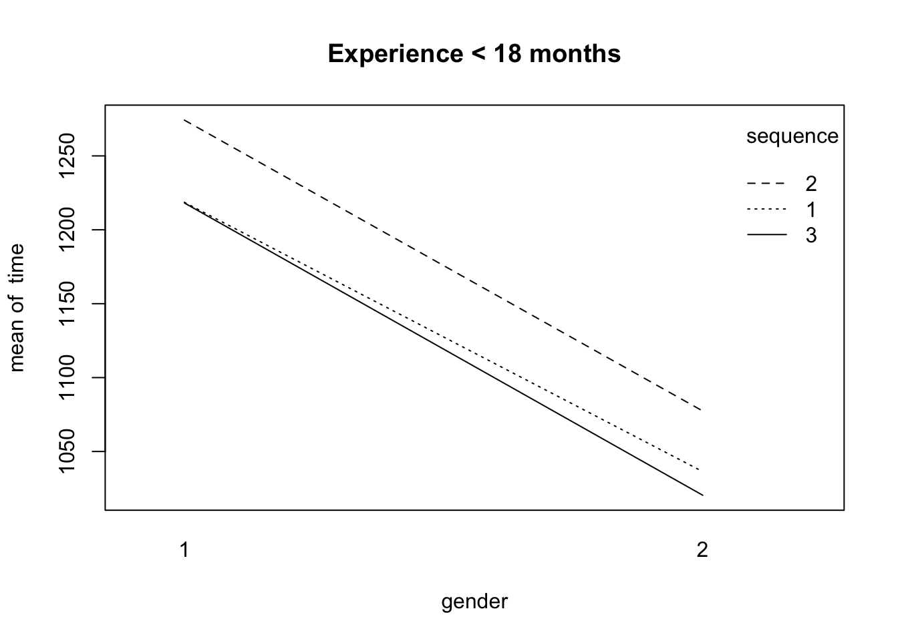
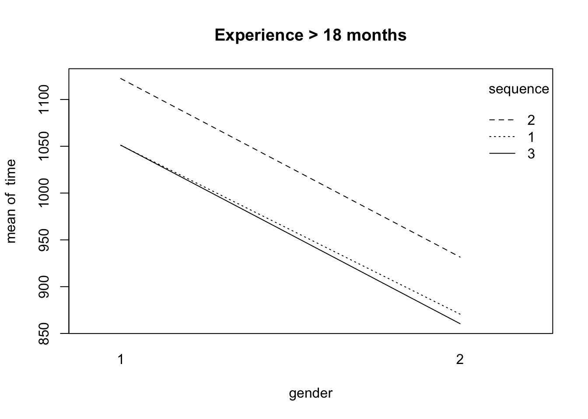

required library
library(plyr)
problem 24.12 a
dt <- read.table("./data/CH24PR12.txt",
col.names = c("time", "gender", "sequence", "experience", "observation"))
dt[, 2] = as.factor(dt[,2])
dt[, 3] = as.factor(dt[,3])
dt[, 4] = as.factor(dt[,4])
fit = aov(time~gender+sequence+experience+gender*sequence+gender*experience+sequence*experience+gender*sequence*experience, data=dt)
residuals = cbind(dt, fit$residuals)
residuals
## time gender sequence experience observation fit$residuals
## 1 1250 1 1 1 1 31.4
## 2 1175 1 1 1 2 -43.6
## 3 1236 1 1 1 3 17.4
## 4 1239 1 1 1 4 20.4
## 5 1193 1 1 1 5 -25.6
## 6 1021 1 1 2 1 -30.0
## 7 1099 1 1 2 2 48.0
## 8 1069 1 1 2 3 18.0
## 9 996 1 1 2 4 -55.0
## 10 1070 1 1 2 5 19.0
## 11 1319 1 2 1 1 44.8
## 12 1251 1 2 1 2 -23.2
## 13 1241 1 2 1 3 -33.2
## 14 1295 1 2 1 4 20.8
## 15 1265 1 2 1 5 -9.2
## 16 1119 1 2 2 1 -3.4
## 17 1110 1 2 2 2 -12.4
## 18 1123 1 2 2 3 0.6
## 19 1097 1 2 2 4 -25.4
## 20 1163 1 2 2 5 40.6
## 21 1217 1 3 1 1 -1.2
## 22 1190 1 3 1 2 -28.2
## 23 1201 1 3 1 3 -17.2
## 24 1232 1 3 1 4 13.8
## 25 1251 1 3 1 5 32.8
## 26 1033 1 3 2 1 -18.2
## 27 1067 1 3 2 2 15.8
## 28 1057 1 3 2 3 5.8
## 29 1077 1 3 2 4 25.8
## 30 1022 1 3 2 5 -29.2
## 31 1066 2 1 1 1 29.6
## 32 1076 2 1 1 2 39.6
## 33 1004 2 1 1 3 -32.4
## 34 1002 2 1 1 4 -34.4
## 35 1034 2 1 1 5 -2.4
## 36 864 2 1 2 1 -6.6
## 37 848 2 1 2 2 -22.6
## 38 881 2 1 2 3 10.4
## 39 892 2 1 2 4 21.4
## 40 868 2 1 2 5 -2.6
## 41 1105 2 2 1 1 27.6
## 42 1043 2 2 1 2 -34.4
## 43 1051 2 2 1 3 -26.4
## 44 1128 2 2 1 4 50.6
## 45 1060 2 2 1 5 -17.4
## 46 927 2 2 2 1 -4.6
## 47 944 2 2 2 2 12.4
## 48 957 2 2 2 3 25.4
## 49 897 2 2 2 4 -34.6
## 50 933 2 2 2 5 1.4
## 51 1021 2 3 1 1 0.6
## 52 1020 2 3 1 2 -0.4
## 53 1035 2 3 1 3 14.6
## 54 1000 2 3 1 4 -20.4
## 55 1026 2 3 1 5 5.6
## 56 841 2 3 2 1 -19.4
## 57 865 2 3 2 2 4.6
## 58 817 2 3 2 3 -43.4
## 59 911 2 3 2 4 50.6
## 60 868 2 3 2 5 7.6
Problem 24.12 b
- Calculate correlation coefficient
res = lm(time~gender+sequence+experience+gender*sequence+gender*experience+sequence*experience+gender*sequence*experience, data=dt)
StdErr = summary(res)$sigma
n = length(res$residuals)
ExpVals = sapply(1:n, function(k) StdErr*qnorm((k-.375)/(n+.25)) )
r = cor(ExpVals, sort(res$residuals))
r
## [1] 0.9916214
problem 24.13 abcde
Problem 24.13 a
Calculate estimated treatment means
estimated_treatment_mean = ddply(dt, .(gender, sequence, experience),
summarize, mean = mean(time))
estimated_treatment_mean
## gender sequence experience mean
## 1 1 1 1 1218.6
## 2 1 1 2 1051.0
## 3 1 2 1 1274.2
## 4 1 2 2 1122.4
## 5 1 3 1 1218.2
## 6 1 3 2 1051.2
## 7 2 1 1 1036.4
## 8 2 1 2 870.6
## 9 2 2 1 1077.4
## 10 2 2 2 931.6
## 11 2 3 1 1020.4
## 12 2 3 2 860.4
AB plots
- No interaction effects
- Both gender and sequence have a main effect.
dat = dt[dt$experience == "1", ]
sequence = dat$sequence
gender = dat$gender
time = dat$time
interaction.plot(gender, sequence, time, main="Experience < 18 months")

## experience level = 1
dat = dt[dt$experience == "2", ]
sequence = dat$sequence
gender = dat$gender
time = dat$time
interaction.plot(gender, sequence, time, main="Experience > 18 months")

Problem 24.13 b
fit = aov(time~gender+sequence+experience+gender*sequence+gender*experience+
sequence*experience+gender*sequence*experience, data=dt)
variance_table = summary(fit)
variance_table = round(as.matrix(variance_table[[1]]), 3)
variance_table[,1:3]
## Df Sum Sq Mean Sq
## gender 1 540360.600 540360.600
## sequence 2 49319.633 24659.817
## experience 1 382401.667 382401.667
## gender:sequence 2 542.500 271.250
## gender:experience 1 91.267 91.267
## sequence:experience 2 911.233 455.617
## gender:sequence:experience 2 19.033 9.517
## Residuals 48 41186.000 858.042
Problem 24.13 c
Test for three-factor interactions
- alternatives
- H0: all \((\alpha\beta\gamma){ijk}\) equal zero
- Ha: not all \((\alpha\beta\gamma){ijk}\) equal zero
- decision rules: if \(F^*\) ≤ F(1-0.05; 2, 48), conclude H0; otherwise, conclude Ha.
- conclusion: \(F^*\) =0.011 < F(1-0.05; 2, 48) = 0.531, conclude H0.
- pvalue = 0.989
variance_table[7,, drop=F]
## Df Sum Sq Mean Sq F value Pr(>F)
## gender:sequence:experience 2 19.033 9.517 0.011 0.989
Problem 24.13 d
Test for AB, AC, BC interactions
AB interaction
- alternatives
- H0: all \((\alpha\beta)_{ij}\) equal zero
- Ha: not all \((\alpha\beta)_{ij}\) equal zero
- decision rules: if \(F^*\) ≤ F(1-0.05; 2, 48), conclude H0; otherwise, conclude Ha.
- conclusion: \(F^*\) = 0.316 < F(1-0.05; 2, 48) = 3.190727, conclude H0.
- pvalue = 0.730
qf(0.95,2,48)
## [1] 3.190727
variance_table[4,, drop=F]
## Df Sum Sq Mean Sq F value Pr(>F)
## gender:sequence 2 542.5 271.25 0.316 0.73
AC interaction
- alternatives
- H0: all \((\alpha\gamma)_{ik}\) equal zero
- Ha: not all (αγ)ik equal zero
- decision rules: if \(F^*\) ≤ F(1-0.05; 1, 48), conclude H0; otherwise, conclude Ha.
- conclusion: \(F^*\) = 0.106 < F(1-0.05; 1, 48) = 4.042652, conclude H0.
- pvalue = 0.746
qf(0.95,1,48)
## [1] 4.042652
variance_table[5,, drop=F]
## Df Sum Sq Mean Sq F value Pr(>F)
## gender:experience 1 91.267 91.267 0.106 0.746
BC interaction
- alternatives
- H0: all \((\beta\gamma)_{jk}\) equal zero
- Ha: not all \((\beta\gamma)_{jk}\) equal zero
- decision rules: if \(F^*\) ≤ F(1-0.05; 2, 48), conclude H0; otherwise, conclude Ha.
- conclusion: \(F^*\) = 0.106 < F(1-0.05; 2, 48) = 0.531, conclude H0.
- pvalue = 0.591
qf(0.95,2,48)
## [1] 3.190727
variance_table[6,, drop=F]
## Df Sum Sq Mean Sq F value Pr(>F)
## sequence:experience 2 911.233 455.617 0.531 0.591
Problem 24.13 e
Test for main effects
main effect from A
- alternatives
- H0: all \(\alpha_i\) (i=1,2) equal zero
- Ha: not all \($\alpha_i\) $ equal zero
- decision rules: if \(F^*\) ≤ F(1-0.05; 1, 48), conclude H0; otherwise, conclude Ha.
- conclusion: \(F^*\) = 629.76 > F(1-0.05; 1, 48) =4.042652, conclude Ha.
- pvalue = 0
qf(0.95,1,48)
## [1] 4.042652
variance_table[1,, drop=F]
## Df Sum Sq Mean Sq F value Pr(>F)
## gender 1 540360.6 540360.6 629.76 0
main effect from B
- alternatives
- H0: all \(\beta_j\) (j=1,2,3) equal zero
- Ha: not all \(\beta_j\) equal zero
- decision rules: if \(F^*\) ≤ F(1-0.05; 2, 48), conclude H0; otherwise, conclude Ha.
- conclusion: \(F^*\) = 28.74 > F(1-0.05; 2, 48) = 3.190727, conclude Ha.
- pvalue = 0
qf(0.95,2,48)
## [1] 3.190727
variance_table[2,, drop=F]
## Df Sum Sq Mean Sq F value Pr(>F)
## sequence 2 49319.63 24659.82 28.74 0
main effect from C
- alternatives
- H0: all \(\gamma_k\) (k=1,2) equal zero
- Ha: not all \(\gamma_k\) equal zero
- decision rules: if \(F^*\) ≤ F(1-0.05; 1, 48), conclude H0; otherwise, conclude Ha.
- conclusion: \(F^*\) = 445.668 > F(1-0.05; 1, 48) = 4.042652, conclude Ha.
- pvalue = 0
qf(0.95,1,48)
## [1] 4.042652
variance_table[3,, drop=F]
## Df Sum Sq Mean Sq F value Pr(>F)
## experience 1 382401.7 382401.7 445.668 0
Problem 24.14 a
D1 = 189.8
D = ddply(dt, .(gender), summarize, mean = mean(time))
D1 = D[1,2] - D[2,2]
D1
## [1] 189.8
D2 = -57.25
D = ddply(dt, .(sequence), summarize, mean = mean(time))
D2 = D[1,2] - D[2,2]
D2
## [1] -57.25
D3 = 6.6
D = ddply(dt, .(sequence), summarize, mean = mean(time))
D3 = D[1,2] - D[3,2]
D3
## [1] 6.6
D4 = 63.85
D = ddply(dt, .(sequence), summarize, mean = mean(time))
D4 = D[2,2] - D[3,2]
D4
## [1] 63.85
D5 = 159.6667
D = ddply(dt, .(experience), summarize, mean = mean(time))
D5 = D[1,2] - D[2,2]
D5
## [1] 159.6667
MSE = 858.042
MSE = variance_table[8,3,drop=F]
MSE
## Mean Sq
## Residuals 858.042
- a = 2
- b = 3
- c = 2
n = 5
- s{D1} = ((MSE/(nbc))[1^2 + (-1)^2])^0.5 = 7.563253
- s{D2} = s{D3} = s{D4} = ((MSE/(nac))[1^2 + (-1)^2])^0.5 = 9.263056
- s{D5} = ((MSE/(nab))[1^2 + (-1)^2])^0.5 = 7.563253
B = t[1-a/2g; (n-1)*abc] = t(1-0.1/(2*5); 48) = t(0.99; 48) = 2.406581
- confidence coefficients
- D1 = [171.5984, 208.0016]
- D2 = [-79.54229, -34.95771]
- D3 = [-15.69229, 28.89229]
- D4 = [41.55771, 86.14229]
- D5 = [141.4651, 177.8683]
findings: D1, D2, D4, D5 are significant, but D3 is not significant.
Problem 24.14 b
Y = ddply(dt, .(gender, sequence, experience), summarize, mean = mean(time))
Y213 = Y[11,]
Y213
## gender sequence experience mean
## 11 2 3 1 1020.4
- s{Y231} = (MSE/n)^0.5 = 13.09994
- t(1-0.05/2; 48) = 2.010635
- confidence interval = [Y - t(1-0.05/2; 48)*s{Y231}, Y + t(1-0.05/2; 48)*s{Y231}]
- confidence interval = [994.0608, 1046.739]
Copyright © 2017 Ming Chen & Wenqiang Feng. All rights reserved.